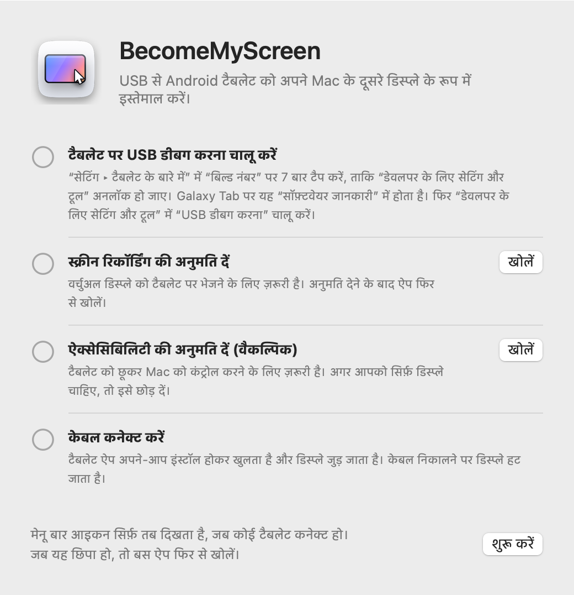
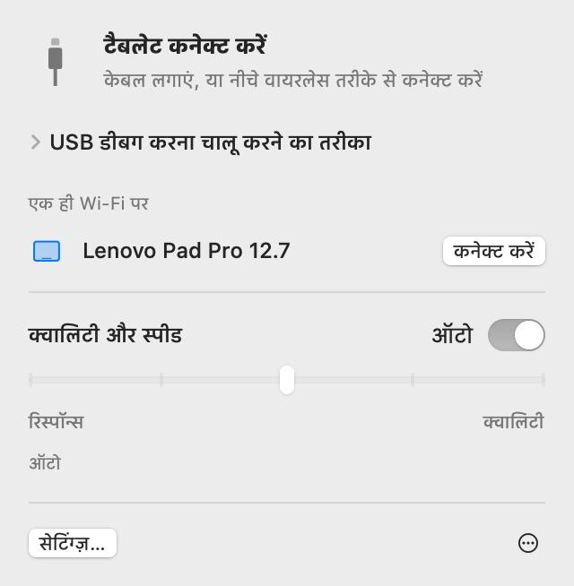
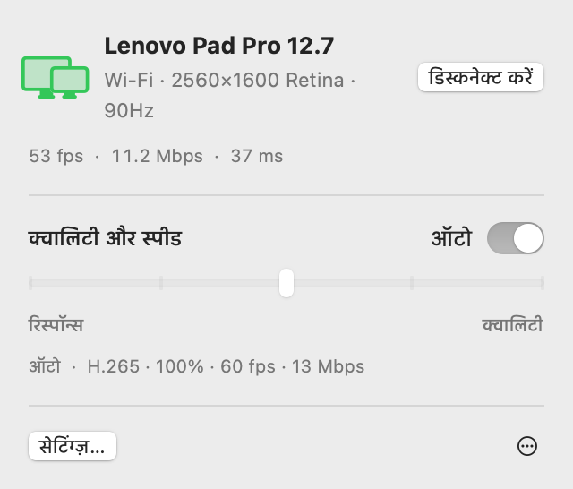
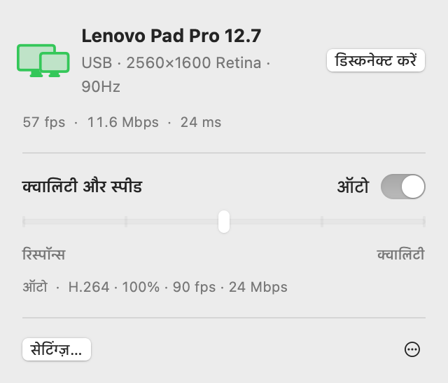
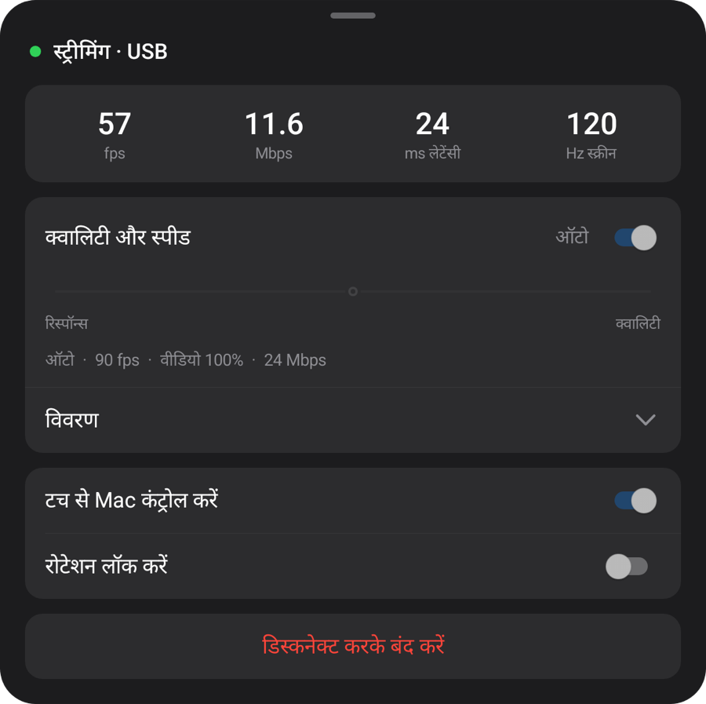
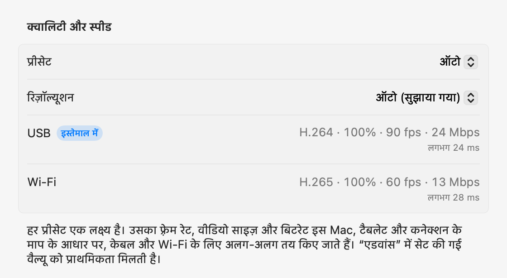

आपका Android टैबलेट,
Mac के लिए दूसरा डिस्प्ले।
USB केबल लगाएं और टैबलेट आपके Mac का डिस्प्ले बन जाता है। केबल निकालें, तो स्क्रीन उसी Wi‑Fi पर चलती रहती है। Mac ऐप टैबलेट ऐप को इंस्टॉल करके खोलता है, और कोई अकाउंट बनाने की ज़रूरत नहीं है।
zip खोलें, ऐप को ऐप्लिकेशन फ़ोल्डर में ले जाएं और खोलें। पहले कनेक्शन के लिए सेटअप देखें।
यह ऐप Mac के लिए है। इसे डाउनलोड करने के लिए यह पेज Mac पर खोलें।

सेटअप
सेटअप सिर्फ़ एक बार करना होता है। उसके बाद, केबल लगाते ही डिस्प्ले जुड़ जाता है, और एक ही Wi‑Fi पर यह बिना केबल के कनेक्ट हो जाता है।
-
Mac ऐप इंस्टॉल करें
डाउनलोड की गई zip खोलें, BecomeMyScreen को ऐप्लिकेशन फ़ोल्डर में ले जाएं और खोलें। स्क्रीन रिकॉर्डिंग की अनुमति दें, फिर ऐप एक बार और खोलें।
-
टैबलेट पर USB डीबग करना चालू करें
“सेटिंग › टैबलेट के बारे में” में “बिल्ड नंबर” पर सात बार टैप करें, ताकि “डेवलपर के लिए सेटिंग और टूल” अनलॉक हो जाए। Galaxy Tab पर यह “सॉफ़्टवेयर जानकारी” में होता है। फिर “डेवलपर के लिए सेटिंग और टूल” में “USB डीबग करना” चालू करें।
-
केबल कनेक्ट करें
जब टैबलेट पूछे कि USB डीबग करने की अनुमति देनी है या नहीं, तो “इस कंप्यूटर से हमेशा अनुमति दें” चुनें और “अनुमति दें” पर टैप करें। Mac टैबलेट ऐप को इंस्टॉल करके खोलता है, फिर डिस्प्ले जोड़ता है। टैबलेट के लिए अलग से कोई ऐप डाउनलोड नहीं करना होता।

स्पीड
Mac के स्क्रीन कैप्चर करने से लेकर टैबलेट के उसे दिखाने तक का समय। Lenovo Pad Pro 12.7 और M4 Pro वाले Mac से मापा गया।
| वीडियो साइज़ | 60 fps | 120 fps |
|---|---|---|
| 100%2560×1600 | 20 ms | 24 ms |
| 75%1920×1200 | 14 ms | 19 ms |
| 50%1280×800 | 11 ms | 16 ms |
Apple silicon का हार्डवेयर एनकोडर स्क्रीन को H.264 में कंप्रेस करके USB से भेजता है, और टैबलेट का हार्डवेयर डिकोडर हर फ़्रेम आते ही दिखा देता है। पहली बार कनेक्ट करने पर, “ऑटो” मापता है कि डिकोडर कितना संभाल सकता है और सबसे ऊंचा ऐसा फ़्रेम रेट चुनता है जिसमें वह पीछे न छूटे। इस टैबलेट पर उसने 90 fps चुना।
मापने का तरीका: दोनों डिवाइस की घड़ियों के अंतर को ठीक करने के बाद, हमने Mac के किसी फ़्रेम को कैप्चर करने और टैबलेट के उसी फ़्रेम को दिखाने के बीच का समय मापा।
वायरलेस
जो टैबलेट एक बार USB से कनेक्ट हो चुका है, वह एक ही Wi‑Fi पर वायरलेस तरीके से भी काम करता है। काम करते समय केबल निकालें, तो स्क्रीन Wi‑Fi पर चलती रहती है।
- कनेक्ट करना
- टैबलेट पर ऐप खोलें, तो वह Mac के मेनू बार में “एक ही Wi‑Fi पर” सूची में दिखता है। “कनेक्ट करें” पर क्लिक करें और स्क्रीन दिखने लगती है।
- केबल निकालना
- यह एक सेकंड के अंदर Wi‑Fi पर स्विच हो जाता है। वर्चुअल डिस्प्ले और आपकी विंडो की व्यवस्था वैसी ही रहती है, और केबल फिर से लगाने पर यह USB पर लौट आता है।
- सुरक्षा
- वायरलेस कनेक्शन की कुंजी सिर्फ़ USB केबल के ज़रिए ही शेयर होती है। कुंजी की पुष्टि होने के बाद ही कनेक्शन बनता है, और स्क्रीन व इनपुट पूरी तरह AES-256-GCM से एन्क्रिप्ट होते हैं।
- अडैप्टिव पेसिंग
- टैबलेट हर मिले फ़्रेम की पुष्टि करता है, और Mac जितना पीछे है उतने फ़्रेम छोड़ देता है और बिटरेट को एडजस्ट करता है। Wi‑Fi के कुछ पल धीमा होने पर भी देरी जमा नहीं होती।


| कनेक्शन | लेटेंसी | नोट |
|---|---|---|
| USB | लगभग 20–25 ms | टैबलेट का अधिकतम फ़्रेम रेट |
| Wi‑Fi 5 GHz | 40–55 ms | 60 fps; बिटरेट क्वालिटी सेटिंग तक अपने-आप बढ़ जाता है |
| Wi‑Fi 2.4 GHz | 40–65 ms | लेटेंसी कभी-कभी 100 ms से ऊपर चली जाती है, जिससे तस्वीर अटकती हुई लग सकती है |
Lenovo Pad Pro 12.7 पर 2560×1600 में लगातार बदलते कॉन्टेंट के साथ मापा गया। अगर टैबलेट 2.4 GHz Wi‑Fi पर है, तो ऐप 5 GHz पर स्विच करने का सुझाव देता है।
क्वालिटी और रिस्पॉन्स
पांच में से कोई एक लेवल चुनें या इसे “ऑटो” पर छोड़ दें। इसे Mac के मेनू बार से या टैबलेट के मेनू से बदलें, दोनों तरफ़ एक साथ बदल जाता है।
| प्रीसेट | फ़्रेम रेट | वीडियो साइज़ | बिटरेट |
|---|---|---|---|
| ऑटो | 90 fps | 100% | 24 Mbps |
| 1सबसे तेज़ रिस्पॉन्स | 120 fps | 50% | 8 Mbps |
| 2तेज़ रिस्पॉन्स | 120 fps | 75% | 14 Mbps |
| 3संतुलित | 90 fps | 100% | 24 Mbps |
| 4उच्च क्वालिटी | 90 fps | 100% | 33 Mbps |
| 5सर्वश्रेष्ठ क्वालिटी | 60 fps | 100% | 39 Mbps |
M4 Pro वाले Mac पर, USB से जुड़े Lenovo Pad Pro 12.7 (2560×1600, 120 Hz) के साथ मापा गया। हर प्रीसेट एक लक्ष्य है: किसी दूसरे Mac या टैबलेट पर, और Wi‑Fi पर, वह माप के आधार पर अपनी वैल्यू खुद तय करता है। “ऑटो”, “संतुलित” जैसा ही है।
वीडियो साइज़, Mac को दिखने वाले रिज़ॉल्यूशन से अलग सेट होता है। छोटा वीडियो भी टैबलेट की स्क्रीन भर देता है, और उसी हिसाब से डिकोडर पर लोड और लेटेंसी कम करता है।
पहली बार कनेक्ट करने पर, ऐप लगभग 10 सेकंड में केबल, इस Mac का वीडियो एनकोडर और हर मोड में टैबलेट का डिकोडर मापता है; Wi‑Fi पर पहली बार कनेक्ट करने पर, यह नेटवर्क मापता है। हर प्रीसेट इन्हीं नतीजों के हिसाब से, केबल और Wi‑Fi के लिए अलग-अलग तय होता है, और “एडवांस” सेटिंग्ज़ में आप हर कनेक्शन के लिए कोई भी वैल्यू सेट कर सकते हैं। अगर केबल धीमा है, तो आपको उसे बदलने के लिए कहा जाता है।



टच
टैबलेट को छुएं, तो Mac उसे माउस इनपुट के रूप में लेता है। Mac पर ऐक्सेसिबिलिटी की अनुमति देते ही यह चालू हो जाता है।
| टैबलेट पर | Mac पर |
|---|---|
| टैप | क्लिक |
| ड्रैग | ड्रैग |
| दो उंगलियों से ड्रैग | स्क्रॉल |
| दो उंगलियों से टैप | राइट-क्लिक |
| तीन उंगलियों से टैप | टैबलेट मेनू खोलता है |
| पेन से ड्रॉ करना | Mac पर ग्राफ़िक्स टैबलेट इनपुट के रूप में पहुंचता है, दबाव और झुकाव के साथ |
| पेन या माउस को स्क्रीन के ऊपर होवर करना | पॉइंटर हिलाता है। राइट-क्लिक के लिए पेन का बटन दबाकर टच करें |
पॉइंटर जो अपनी जगह लौट आता है
जब आप टैबलेट को छूते हैं, तो Mac का पॉइंटर उसी जगह पर चला जाता है। उसके बाद माउस को थोड़ा हिलाएं, तो पॉइंटर टच से पहले वाली जगह पर लौट आता है, इसलिए आपको उसे मुख्य डिस्प्ले पर अपने काम तक वापस खींचकर नहीं लाना पड़ता। आप इसे सेटिंग्ज़ में बंद कर सकते हैं।
विवरण
- मेनू बार आइकन
-
यह सिर्फ़ तब दिखता है, जब कोई टैबलेट कनेक्ट हो। छिपा होने पर ऐप फिर से खोलें, तो यह कुछ देर के लिए अपने खुले पैनल के साथ दिखता है।
- इंतज़ार
- तैयारी
- इस्तेमाल में
- ध्यान दें
- टैबलेट ऐप खोलना
- केबल लगाते समय अगर टैबलेट ऐप नहीं चल रहा है, तो Mac उसे खोल देता है, और स्क्रीन बंद हो तो उसे चालू कर देता है। यह लॉक स्क्रीन को कभी बायपास नहीं करता।
- अपडेट
- Mac ऐप नए वर्शन की जाँच करता है और आपके चुनने पर खुद को अपडेट करता है। अगर इसमें नया टैबलेट ऐप है, तो डिस्प्ले शुरू होने से पहले टैबलेट को केबल से अपडेट किया जाता है।
- पोर्ट्रेट
- टैबलेट को पोर्ट्रेट में घुमाएं, तो वर्चुअल डिस्प्ले भी पोर्ट्रेट में दोबारा बन जाता है।
- रीफ़्रेश रेट और स्क्रीन टाइमआउट
- स्ट्रीमिंग के दौरान, टैबलेट का रीफ़्रेश रेट स्थिर रखा जाता है ताकि वह 60 Hz पर न गिरे, और स्क्रीन बंद नहीं होती।
- केबल की जांच
- अगर USB 480 Mbps से कम पर कनेक्ट होता है, ट्रांसफ़र 8 MB/s से नीचे रहता है, या 3 मिनट में कनेक्शन तीन बार टूटता है, तो ऐप दूसरा केबल या पोर्ट आज़माने का सुझाव देता है।
- कनेक्शन टूटने पर
- अगर केबल निकल जाता है, तो स्क्रीन Wi‑Fi पर चलती रहती है। अगर वायरलेस तरीके से जारी नहीं रह पाता, तो वर्चुअल डिस्प्ले थोड़ी देर के लिए बना रहता है, और अगर टैबलेट इस बीच फिर से कनेक्ट हो जाता है, तो आपकी विंडो की व्यवस्था पहले जैसी बनी रहती है।
- डिस्कनेक्ट करें और फिर से कनेक्ट करें
- मेनू बार में “डिस्कनेक्ट करें” पर क्लिक करें, तो केबल लगा होने पर भी टैबलेट की स्क्रीन रोक दी जाती है। जारी रखने के लिए “फिर से कनेक्ट करें” पर क्लिक करें।
- टैबलेट ऐप अपने-आप बंद हो जाता है
- जब टैबलेट में कुछ भी लगा न हो, चार्जर भी नहीं, तो टैबलेट ऐप 10 सेकंड बाद अपने-आप बंद हो जाता है। अगर वह इसके बजाय वायरलेस कनेक्शन का इंतज़ार कर सकता है, तो 2 मिनट तक इंतज़ार करता है।
ज़रूरी शर्तें
- Mac
- Apple silicon वाला Mac, macOS 14 या बाद का वर्शन
- टैबलेट
- Android 8.0 या बाद का वर्शन, ऐसे डिवाइस पर जिसमें USB डीबग करना चालू किया जा सके
- केबल
- डेटा ट्रांसफ़र सपोर्ट करने वाला USB केबल। सिर्फ़ चार्जिंग वाले केबल कनेक्ट नहीं होंगे। हब की तुलना में Mac का अपना पोर्ट ज़्यादा भरोसेमंद है।
- वायरलेस
- Mac और टैबलेट एक ही Wi‑Fi पर होने चाहिए; 5 GHz का सुझाव दिया जाता है। पहला कनेक्शन USB से होना चाहिए।
- Mac अनुमतियां
- स्क्रीन रिकॉर्डिंग। टच से Mac कंट्रोल करने के लिए ऐक्सेसिबिलिटी भी, और वायरलेस इस्तेमाल के लिए लोकल नेटवर्क भी।
अक्सर पूछे जाने वाले सवाल
क्या मुझे टैबलेट पर कोई ऐप इंस्टॉल करना होगा?
नहीं। टैबलेट ऐप, Mac ऐप के अंदर ही आता है, इसलिए केबल लगाने पर Mac उसे इंस्टॉल करके खोल देता है। Mac ऐप अपडेट करने पर, अगले कनेक्शन पर टैबलेट ऐप भी साथ में अपडेट हो जाता है।
क्या यह Wi‑Fi पर काम करता है?
हां। एक बार USB से कनेक्ट करने के बाद, यह आगे से एक ही Wi‑Fi पर वायरलेस तरीके से कनेक्ट होता है। टैबलेट पर ऐप खोलें और Mac के मेनू बार में “कनेक्ट करें” पर क्लिक करें, या इस्तेमाल के दौरान बस केबल निकाल दें। लेटेंसी USB से थोड़ी ज़्यादा होती है (5 GHz पर 40–55 ms), और 2.4 GHz Wi‑Fi पर कभी-कभी तस्वीर अटक सकती है, इसलिए 5 GHz का सुझाव दिया जाता है।
पहला कनेक्शन USB से ही क्यों होना चाहिए?
क्योंकि वायरलेस कनेक्शन की कुंजी सिर्फ़ केबल के ज़रिए ही शेयर होती है। इस तरह, एक ही Wi‑Fi पर कोई दूसरा डिवाइस आपका टैबलेट बनकर आपके Mac से कनेक्ट नहीं हो सकता। टैबलेट ऐप भी उसी समय इंस्टॉल होता है।
क्या पेन का दबाव काम करता है?
हां। पेन का दबाव और झुकाव macOS तक ग्राफ़िक्स टैबलेट इनपुट (दबाव, झुकाव और नज़दीकी) के रूप में पहुंचते हैं। यह Android के स्टैंडर्ड स्टाइलस इनपुट का इस्तेमाल करता है, इसलिए S Pen और Lenovo पेन के लिए किसी अतिरिक्त SDK या ड्राइवर की ज़रूरत नहीं होती। Lenovo Pad Pro 12.7 के पेन से टेस्ट किया गया।
यह किन टैबलेट के साथ काम करता है?
Android 8.0 या बाद के वर्शन वाला कोई भी टैबलेट, जिसमें USB डीबग करना चालू किया जा सके। डेवलपमेंट और माप Lenovo Pad Pro 12.7 (2944×1840, 120 Hz) पर किए गए; दूसरे डिवाइस अभी खुद टेस्ट नहीं किए गए हैं। वर्चुअल डिस्प्ले का रिज़ॉल्यूशन और ओरिएंटेशन, कनेक्ट होते समय टैबलेट की स्क्रीन के हिसाब से तय होता है।
यह App Store पर क्यों नहीं है?
वर्चुअल डिस्प्ले बनाने के लिए macOS की एक प्राइवेट सुविधा इस्तेमाल होती है, इसलिए इसे App Store पर पब्लिश नहीं किया जा सकता। इसके बजाय, ऐप Apple डेवलपर सर्टिफ़िकेट से साइन किया गया है और Apple से नोटराइज़ किया गया है, इसलिए डाउनलोड करते ही यह खुल जाता है।
इसे स्क्रीन रिकॉर्डिंग और ऐक्सेसिबिलिटी की ज़रूरत क्यों है?
स्क्रीन रिकॉर्डिंग, टैबलेट पर भेजने के लिए वर्चुअल डिस्प्ले को कैप्चर करती है, ऐक्सेसिबिलिटी टैबलेट के टच और पेन को Mac इनपुट में बदलती है, और लोकल नेटवर्क एक ही Wi‑Fi पर टैबलेट ढूंढता है। स्क्रीन सिर्फ़ USB केबल पर या आपके Wi‑Fi के अंदर ही जाती है (वायरलेस होने पर एन्क्रिप्ट होकर), और कभी इंटरनेट पर नहीं जाती।
कनेक्शन बार-बार टूट रहा है।
डेटा ट्रांसफ़र सपोर्ट करने वाला कोई दूसरा केबल आज़माएं, या हब के बजाय सीधे Mac के पोर्ट में लगाएं। जब USB धीमे कनेक्ट होता है या बार-बार टूटता है, तो ऐप पहले ही बता देता है। थोड़ी देर के लिए कनेक्शन टूटने पर, वर्चुअल डिस्प्ले 15 सेकंड तक बना रहता है और वहीं से फिर शुरू हो जाता है जहां रुका था।
अगर टैबलेट लॉक हो तो?
Mac स्क्रीन को चालू करके ऐप खोलता है, लेकिन लॉक को कभी बायपास नहीं करता। अपने PIN या पैटर्न से इसे अनलॉक करें, तो यह तुरंत कनेक्ट हो जाता है।
क्या यह Intel Mac पर काम करता है?
मौजूदा रिलीज़ सिर्फ़ Apple silicon वाले Mac के लिए है।
डाउनलोड
यह ऐप Mac के लिए है। इसे डाउनलोड करने के लिए यह पेज Mac पर खोलें।
zip खोलें, ऐप को ऐप्लिकेशन फ़ोल्डर में ले जाएं और खोलें। पहले कनेक्शन के लिए सेटअप देखें।